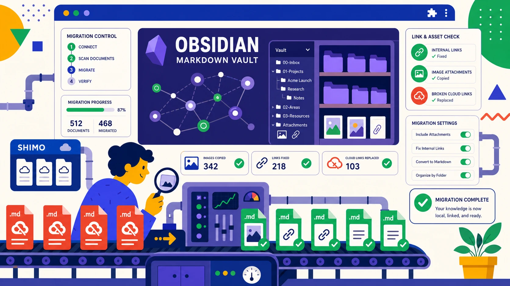

- 石墨迁移到 Obsidian 的最佳中间格式是 Markdown，不是 Word 或 PDF
- 先保留石墨原文件夹结构，再在 Obsidian 里逐步重建双链和索引页
- 图片迁移的关键是本地附件目录和相对路径，不是只看正文是否导出
- 评论、历史版本、协作记录通常无法迁移，需要迁移前单独留档
- 迁移完成后要抽查数量、图片、链接、标签和备份同步五项
把石墨文档迁移到 Obsidian，推荐流程是：先用批量导出工具把石墨文档导出为 Markdown，并保留文件夹层级和图片附件；然后把导出的目录放入 Obsidian Vault；最后把重要目录页改造成索引页，用 [[双链]]、标签和反向链接重建知识结构。Obsidian 本质上读取本地 Markdown 文件，因此迁移重点不是“上传导入”，而是“本地目录、附件路径和内部链接整理”。
这篇文章适合已经决定从石墨转向 Obsidian 的个人用户、研发团队、产品团队和知识库维护者。它不会重复讲所有导出格式，而是聚焦一个目标：把石墨里的资料变成可长期维护、可全文检索、可双链组织的本地知识库。
官方资料依据
Obsidian 官方说明，数据保存在设备上的本地文件夹中，这个文件夹称为 Vault；同时 Obsidian 支持 Markdown、图片和 PDF 等文件类型，也支持内部链接和反向链接。参考：Obsidian 数据存储、支持的文件格式、内部链接、反向链接。
迁移到 Obsidian 前，先确认 Markdown、图片和表格能正确导出。
迁移到 Obsidian 前先确认什么？
Obsidian 很适合长期知识管理，但不是所有石墨内容都适合原样迁移。迁移前先把资料分成三类：需要持续编辑的知识、需要归档留痕的定稿、需要保持表格能力的数据。
哪些石墨文档适合迁移到 Obsidian
适合迁移的内容通常有几个特点：以文字为主、标题层级清楚、需要长期检索、会被不断引用。比如产品方案、读书笔记、会议纪要、技术方案、项目复盘和个人知识库文章。
不太适合只迁移为 Markdown 的内容包括：合同、报价单、审批记录、含大量合并单元格的表格、带复杂排版的宣传材料。这些内容可以放进 Obsidian 附件目录，但建议同时保留 PDF 或 Excel。
Markdown、PDF、Word 该怎么选
| 石墨内容类型 | 推荐导出格式 | 迁移到 Obsidian 后的用途 |
|---|---|---|
| 普通文档、方案、笔记 | Markdown | 作为可编辑笔记，参与搜索、双链和标签管理 |
| 合同、公告、定稿资料 | PDF + Markdown | PDF 做原貌归档，Markdown 做检索摘要 |
| 复杂表格、统计清单 | Excel | 作为附件保存，必要时在笔记中链接引用 |
| 图片很多的教程 | Markdown + 本地图片 | 需要重点检查附件目录和图片相对路径 |
如果你的资料类型很混杂，先用格式选择表决定导出策略。
从石墨批量导出 Markdown
Obsidian 迁移的第一步不是打开 Obsidian，而是先在石墨端把源资料导干净。这里最重要的三个要求是：Markdown 文件完整、文件夹结构完整、图片附件完整。
按文件夹导出并保留目录层级
如果你手动逐篇导出，最终很容易得到一个平铺的大文件夹。Obsidian 能搜索这些文件，但知识库结构会很混乱。建议按石墨里的项目、团队或知识库目录批量导出，让本地目录和原始目录保持一致。
- 先在石墨中确认迁移范围，例如“个人空间/知识库/产品资料”。
- 把明显过期、重复、无权限的文档先标记出来，不要混进第一批迁移。
- 使用支持目录层级的批量导出方式，导出格式选择 Markdown。
- 导出后对比石墨端文件数量和本地
.md文件数量。 - 记录失败文件，单独补导或改用 Word/PDF 归档。
不熟悉批量导出时，可以先看完整导出教程。
图片、附件、表格的导出检查
Markdown 正文出来了，不代表迁移完成。你还要确认图片资源是否在本地、图片路径是否是相对路径、附件链接是否还能打开。对表格较多的文档，先判断它是“说明性小表格”还是“业务数据表”。前者可以留在 Markdown 里，后者建议单独导出 Excel。
不要急着删除石墨原文档
Obsidian 中能打开 Markdown，只能说明正文迁移成功。图片、附件、内部链接、表格和重要格式都验收通过后，再考虑归档或清理石墨端资料。
把 Markdown 放入 Obsidian Vault
Obsidian 的 Vault 就是一个本地文件夹。你可以新建一个空 Vault，再把导出的石墨目录复制进去；也可以直接把导出的根目录作为新的 Vault 打开。两种方式都可行，区别在于后续管理习惯。
新建 Vault 还是复用导出目录
| 方式 | 适合场景 | 注意事项 |
|---|---|---|
| 新建 Vault 后复制资料 | 想重新规划知识库结构 | 迁移时保留一份原始导出目录，便于回滚 |
| 直接打开导出目录 | 想最大程度保留石墨原目录 | 不要马上批量重命名，先完成验收 |
| 放入已有 Vault | 已有个人知识库，只想追加石墨资料 | 建议放到独立顶层目录，避免和旧笔记混杂 |
图片资源目录建议怎么命名
如果导出工具已经为每篇文档生成同名资源目录，建议先保持原状。不要为了“整洁”马上把图片集中到一个 assets 文件夹，因为这可能破坏 Markdown 中的相对路径。
如果你要统一附件目录，建议在 Obsidian 里完成路径替换后再移动。迁移初期的优先级是可用和可回滚，不是目录看起来最漂亮。
迁移后如何修复链接和知识结构
把文件放进 Vault 只是迁移的下半场开始。Obsidian 的价值不在于把文件堆进去，而在于用双链、反向链接、标签和索引页，把原来分散的文档变成可探索的知识网络。
内部链接从石墨链接改成本地双链
石墨文档中的内部链接通常指向线上 URL。迁移后，如果链接仍然跳回石墨，就会受到账号、权限和网络状态影响。建议把高频引用的石墨链接改成 Obsidian 内部链接。
- 先搜索正文里的
shimo.im链接。 - 找到对应的本地 Markdown 文件。
- 把线上链接改为
[[文件名]]或[[文件名#标题]]。 - 对项目首页、知识库首页、会议纪要索引优先处理。
标签、目录、MOC 页面重建
不要试图一次性给所有文档加标签。更现实的做法是先创建 5 到 10 个高层级标签，比如 #项目、#产品、#研发、#会议纪要、#归档。然后为每个重要主题建立一页 MOC，也就是索引页。
一个产品团队可以这样组织：
产品知识库首页.md：链接到路线图、需求池、竞品分析、用户研究。项目A索引.md：链接到需求文档、设计稿说明、会议纪要、上线复盘。团队会议纪要.md：按月份汇总会议记录。
常见问题排查
图片不显示怎么办？
先检查 Markdown 文件中的图片路径。常见问题有三类：图片目录没有一起复制、路径从相对路径变成了失效的绝对路径、文件名中有特殊字符导致识别失败。最简单的排查方式是把一篇含图文档和它的图片目录放在同一文件夹里测试。
标题层级错乱怎么办？
石墨中的正文样式和 Markdown 标题并不总是一一对应。迁移后重点处理索引页和高频阅读文档，不必一开始就修复所有旧文档。标题层级的目标是帮助搜索和折叠，不是追求和石墨界面完全一致。
中文文件名乱码怎么办？
优先确认操作系统和压缩包解压工具是否使用 UTF-8。跨 Windows、macOS、NAS 同步时，中文、空格和特殊符号都可能带来路径问题。团队迁移时建议使用简短中文标题，避免斜杠、冒号、问号等特殊字符。
迁移验收清单
正式把 Obsidian 作为主知识库前，建议做一次验收。下面这张表可以直接作为检查清单使用。
| 检查项 | 通过标准 | 失败时处理 |
|---|---|---|
| 文件数量 | 本地 Markdown 数量与迁移清单一致 | 回到石墨端补导失败文件 |
| 图片显示 | 断网后抽查图片仍可显示 | 重新导出图片或修复附件路径 |
| 内部链接 | 关键索引页能跳到本地笔记 | 将石墨线上链接改为 Obsidian 双链 |
| 表格资料 | 重要业务表有 Excel 附件备份 | 单独从石墨表格导出 xlsx |
| 备份同步 | Vault 已进入本地备份或云盘同步策略 | 建立定期备份，不只依赖单台电脑 |
迁移完成后，数量、完整性和备份策略都要复核。
常见问题
石墨文档可以直接导入 Obsidian 吗？
Obsidian 不像云文档那样需要“导入成在线文档”。它读取本地 Markdown 文件，所以你只需要把石墨文档导出为 Markdown，再把文件夹放进 Vault。
Obsidian 迁移石墨文档应该选 Markdown 还是 Word？
优先选 Markdown。Word 可以作为排版复杂文档的补充备份，但在 Obsidian 里无法像 Markdown 一样参与双链、标题折叠和文本检索。
石墨文档里的图片迁移到 Obsidian 后会丢吗？
如果只导出正文，图片可能会丢。正确做法是同步下载图片附件，并保留 Markdown 中指向本地图片的相对路径。迁移后建议断网抽查几篇含图文档。
石墨文档的评论、协作记录能迁移到 Obsidian 吗？
通常不能完整迁移。评论、历史版本、@提及和协作记录属于石墨平台信息，不是 Markdown 正文内容。重要记录应在迁移前截图或单独整理。
大量石墨文档迁移到 Obsidian 后怎么整理？
先保留原目录，再逐步建立索引页、标签和双链。不要迁移第一天就批量重命名所有文件，否则图片路径和已有链接更容易出问题。